先说关键：3D 只在高缩放出现
代码核实 + 实测吻合：3D 列车推送门 z ≥ 14.2，实例创建门 z ≥ 16.2，完全淡入 z = 17.5（Z_ON=16 / Z_FULL=17.5）。日常浏览缩放（z<14）时列车仍是 2D 图标；放大到街道级才会看到 3D 列车。以下截图全部在 z=17.5、pitch 60° 拍摄（V=1，2D 图标完全隐藏）。
1. desneyrline-100 — 迪士尼度假区线 100 形（6 辆）
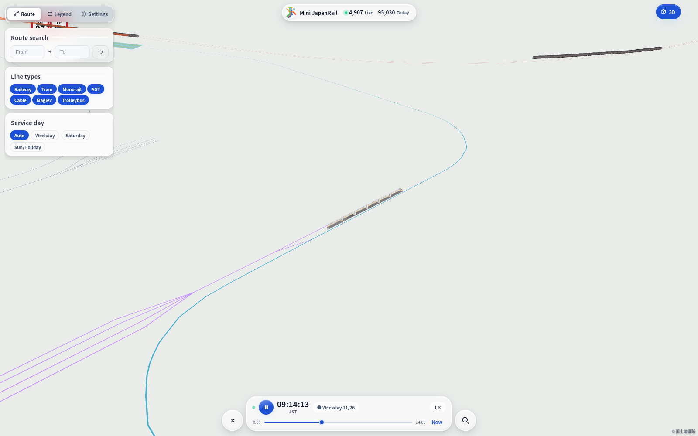
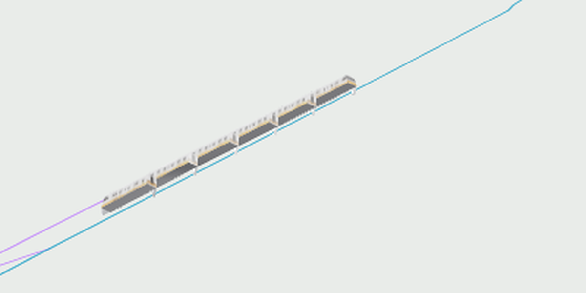
✅ 通过：白底 + 黄色波浪带 + 车窗清晰可见，6 节编组完整。不是 2D 图标，不是素色占位盒。
2. titibu-7500 — 秩父 7500 系（3 辆）
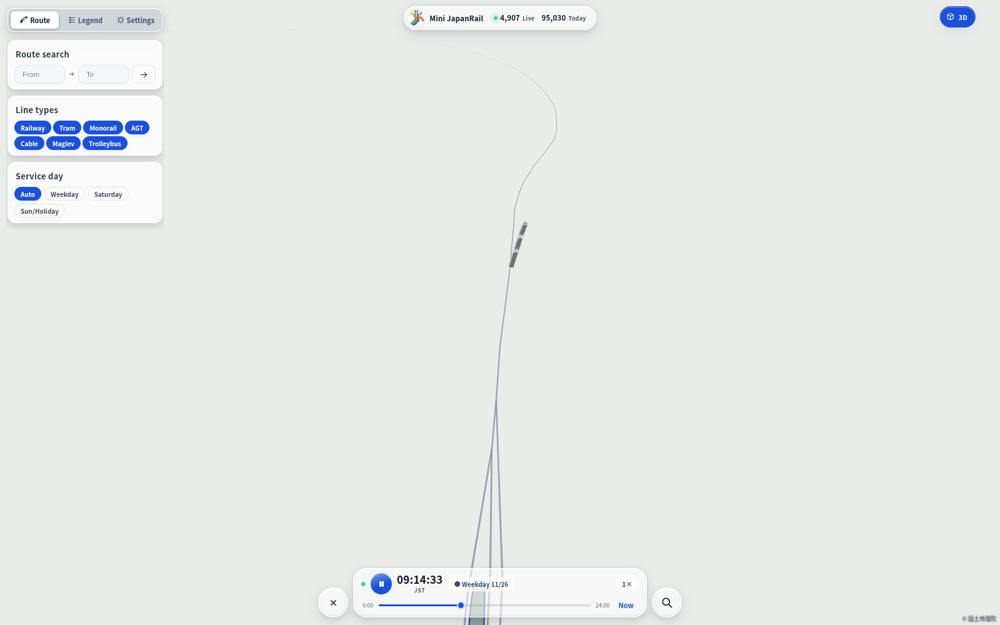
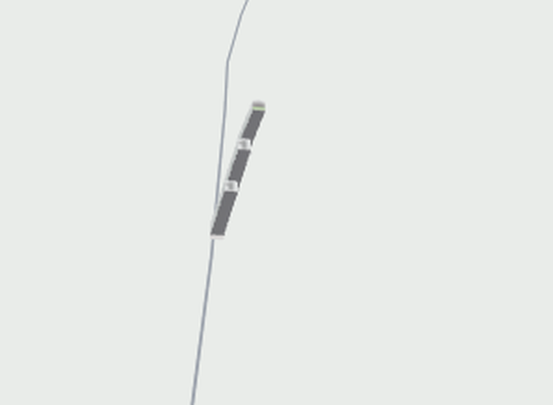
✅ 通过：3 节编组、形态正确。绿带仅在车顶边缘隐约可见——列车南北向与视线方向重合，侧面难见（角度问题，非模型问题）。
3. hakodatesiden-9600 — 函馆市电 9600 形（1 辆）
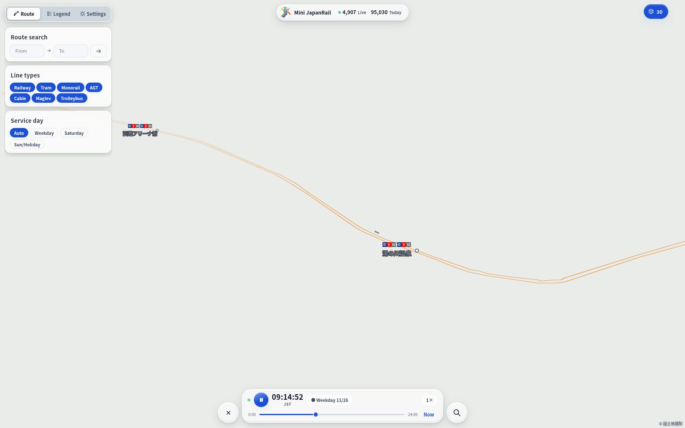
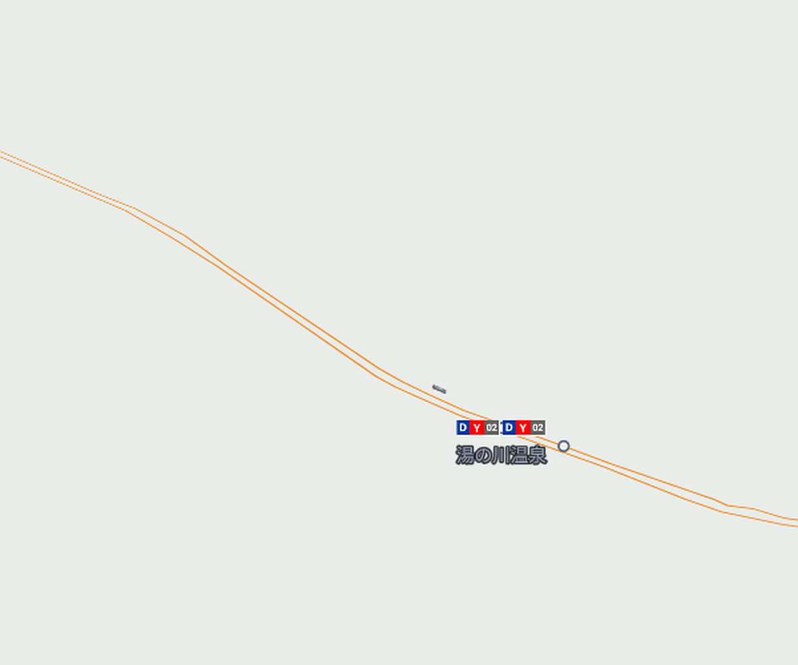
✅ 通过：单节 12 m 电车以 3D 实例显示在轨道上。车太小，蓝带未清晰入镜（尺寸问题，非模型问题）。
4. jr-shikoku-2700 — 予讃線 2700 系（301 批样本）
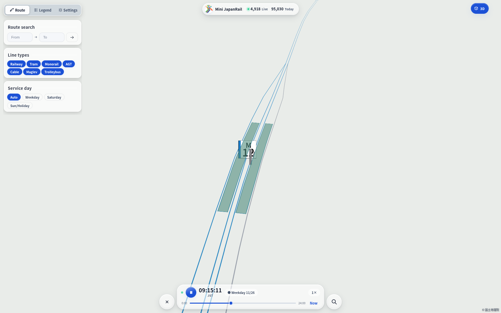
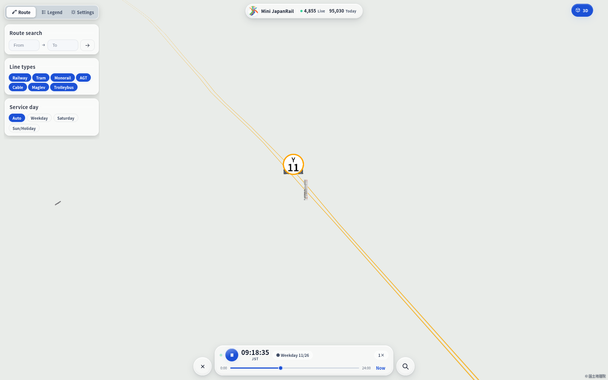
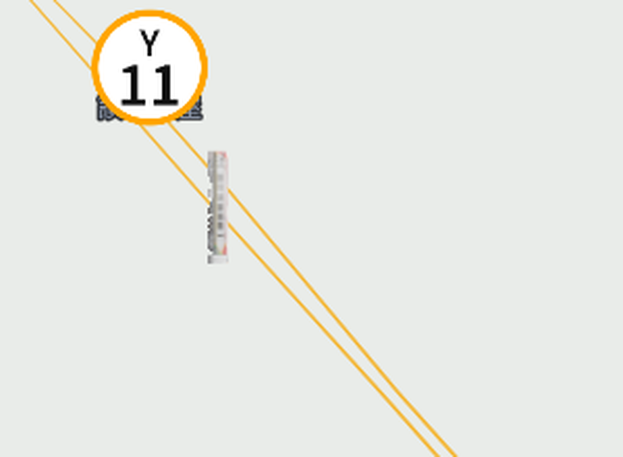
✅ 通过：白底红带清晰可见（侧面 bearing 90 拍摄），2 节编组。301 批纸模在地图上同样正常显示。
5. ⚠️ 对照：山手線列车显示为 315 系（错车）
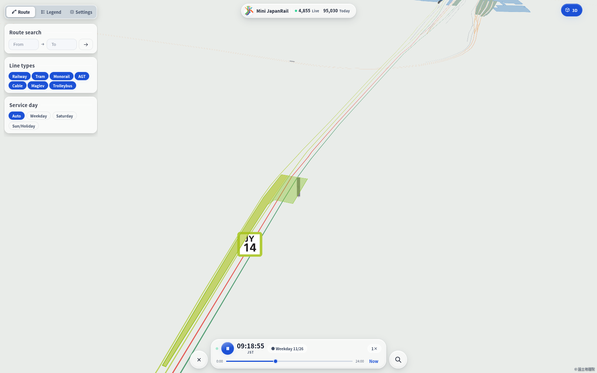
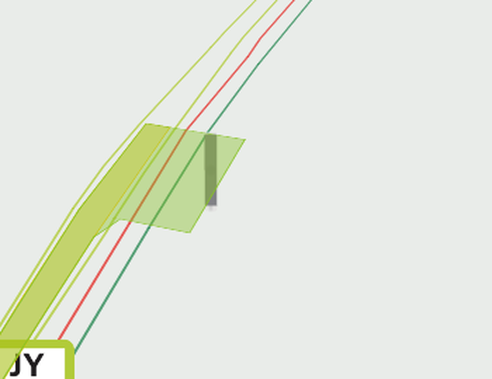
⚠️ 合并副作用，非模型问题：山手线列车的 lines 数组是 ["東海道本線","東北本線","山手線"]，pathOf 按顺序取第一个有映射的 key——合并新增的 東海道本線→315 命中后立即返回，专门给山手线写的 E235 规则（stopsIn 山手 30 站）被遮蔽、永不生效。主站时代東海道本線无 key，不会触发。单给山手線加 key 也修不了（東海道本線排在前面），需调整 pathOf 优先级或按区段拆分映射。合并前请定夺。
6. 中缩放对照：z=13 的迪士尼（仍是 2D 图标）
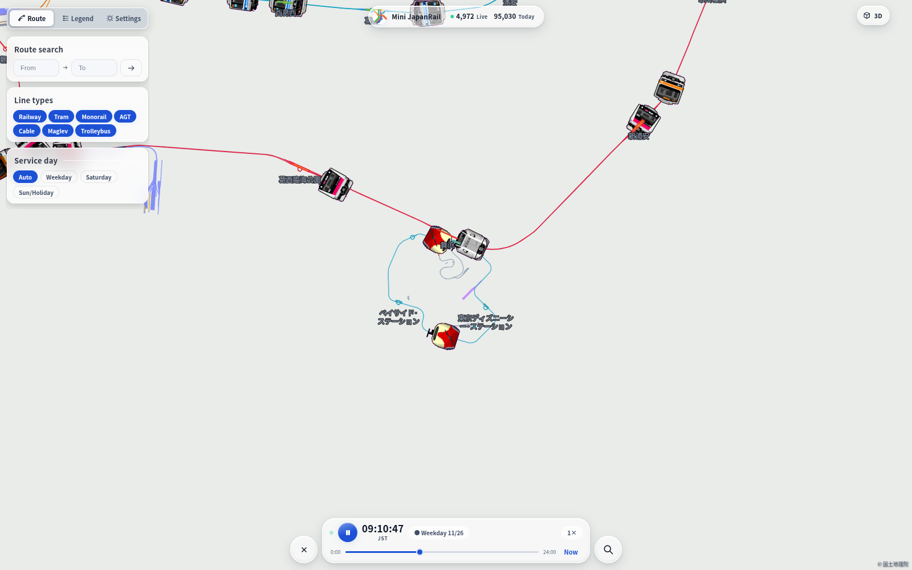
7. 全日本总览
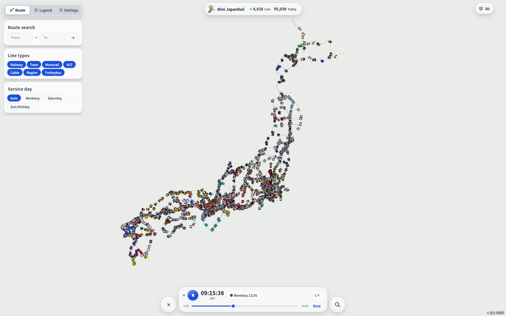
结论与建议
✅ 合并后地图显示效果达到预期：三条线 + 予讃線样本在高缩放下全部以正确纸模 3D 带涂装显示，V=1，零控制台错误。建议推进合并（选 A）。
⚠️ 两个前提请定夺：（1）山手线变 315（§5）：合并后山手线列车将显示为错误的 315 系 3D 模型而非绿色 E235，建议合并同时修 pathOf 优先级或相关映射；（2）3D 只在高缩放出现（z≥16.2，完全淡入 z=17.5），日常浏览缩放仍是 2D 图标——若期望“地图上随处可见 3D 列车”，需另议（改阈值是产品改动，不在本次合并范围内）。
完整报告：~/workspace/jr3d/work/main-site-maptest-20261126/MAPTEST.md ｜ 测试脚本：maptest5/6/7.mjs，结果：maptest-results.json / maptest6-results.json / maptest7-results.json ｜ 未核实：合并部署到线上后的实际表现，待部署后白天抽查运行中班次最终确认。